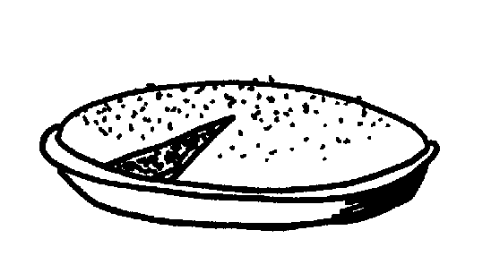

Banana Bread
Biscuits
Bishop's Bread
Blueberry Coffee Cake
Buttermilk Hotcakes
Chippewa Fried Bread
Cornmeal Mush
Crunchy Gradnola
Dutch Babies
Funnel Cakes
Gingerbread Scones
Northern Sweet Cornbread
Pumpkin Nut Bread
Sour-Cream Coffee Cake
Tea Scones
Waffles
When he was in college, your dad worked as a Sigma Nu kitchen helper who set up and served meals. He became very friendly with the cooks who used to ply him with pies and coffee cakes which he shared with me after we started going together. One of our favorites was one the cooks called Bishop's Bread.

Oven: 350º Time: 35 minutes
Prepare 1/2 cup sour milk. Stir 1/2 teaspoon vinegar or lemon juice into 1/2 cup milk. Set aside.
Stir together the following:
1 1/4 cup flour
1 teaspoon salt
1 cup brown sugar
1/2 teaspoon cinnamon
Add 1/4 cup soft shortening to the dry ingredients. Mix until crumbly. Remove 1/4 cup crumbs and set aside.
To the remainder, stir in the following:
1 teaspoon baking powder
1/4 teaspoon soda
Stir in 1 beaten egg and 1/2 cup sour milk until well-mixed. To sour milk, add 1 teaspoon vinegar or lemon juice to one cup milk. Stir and let rest a few minutes.
Pour batter into greased pie pan. Sprinkle with 1/4 cup reserved crumbs. Bake at 350º for 30 minutes.